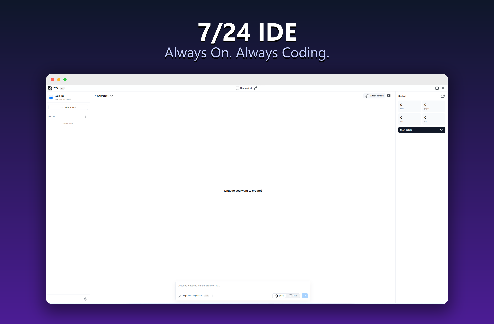

7/24 IDE is a complete, local workspace for Windows. Run parallel agents in isolated Git Worktrees, use LSP for flawless refactoring, watch live terminal streams via node-pty, and review everything with interactive Diffs — all inside your own project folder.

Unlike closed cloud sandboxes, 7/24 IDE works directly in your chosen folder with visible reasoning, reviewable edits, and local command execution.
In Build mode the agent edits code right away. In Plan mode it drafts a step-by-step checklist, then executes each step with an isolated micro-agent in a secure Git Worktree — with live progress tracking.
A bundled Rust core parses real Tree-sitter syntax trees and provides Language Server Protocol (LSP) superpowers like "Go to definition" for flawless, semantic cross-file refactoring.
Watch real-time terminal output via node-pty integration directly in chat. The agent runs compilers, answers interactive prompts via stdin, and can execute unsafe code inside an isolated Windows Sandbox.
Review every change side-by-side in a fullscreen Monaco diff before it touches disk. Per-operation permission rules (auto / ask / deny) for reads, writes and commands keep you in control.
A silent snapshot is taken before every agent run. Roll the entire project back to any point in one click from the Snapshots tab — your safety net for fearless iteration.
After a successful build the agent reflects on the session and compiles reusable skills that auto-activate on similar future tasks — so it gets faster and more consistent over time.
Search hundreds of OpenRouter models with FREE badges, context-window and price labels, and pin favorites. Configure a fallback model for transient provider failures.
Run fully private, offline builds. Select Ollama in settings, point it at your local API, fetch local models and tune the context window (num_ctx) — no cloud required.
Connect databases, search engines, web readers or formatters as standard stdio JSON-RPC MCP servers directly from settings — extending what the agent can do.
Collapsible reasoning blocks, clean tool-call cards, anti-truncation auto-continue, image paste & drag-drop, conversation branching, and one-click "Run" on code blocks.
Optionally stage and commit after each plan step with AI-generated messages. Verify or edit the message before it lands, and customize the commit prefix.
Projects, chats and snapshots stay on your machine. Your API key is encrypted with the OS keychain (Windows DPAPI). Full interface available in English, Russian and Chinese.
Pick the right level of autonomy for the task. Quick fix? Build mode. Whole feature from scratch? Plan mode breaks it into verifiable steps.
The agent reads your files, writes precise edits and runs commands immediately. A live activity bar shows what it's doing, which files changed, and token usage in real time. Best for fixes, refactors and incremental changes.
The agent first proposes a step-by-step plan you can edit and approve. Each step runs in an isolated micro-agent inside a dedicated Git Worktree, merged only on success. A sticky progress bar and Tasks tab track every step, with self-healing on build errors.
Observe this step-by-step interactive simulation of the developer agent taking a user prompt and building it into a working product.
index.html for structure, styles.css for clean styling, and script.js to fetch weather data. Starting compilation...
index.htmlstyles.cssscript.js...We believe autonomy must be safe. In 7/24 IDE, you configure the exact trust and permissions settings for the developer agent:
The agent is requesting permission to run a terminal command:
npm install chart.js --save
Starting your journey with an AI developer is incredibly straightforward.
Download the setup file (.exe) for Windows from GitHub and run the standard installer.
Choose any directory on your local machine where you want the agent to build and modify files.
Paste an OpenRouter API key for cloud models, or point to a local Ollama endpoint for fully offline work. Pick your model and start building.